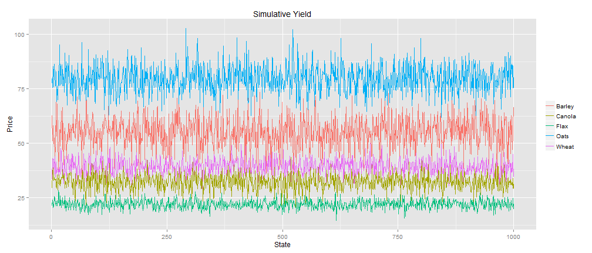

A Simple Farm Model for Saskatchewan
Based on PMP and Simulation
Jon Duan
ECON 595 Agriculture Economics Project
Assumption of the Model
Cost is fixed
- Cost is based on the farmers' operation and the situation of farm or soil. For cerntain area and time period, we assume it fixed.
Yield is normally distributed
- Yiled depends on something like weather or other random factors.
Price following a stochastic process.
- Price changes frequently, even in short term, like other commodity price.
Data Source and Description
Five major crops in SK: Wheat, Oats, Barley, Flax, Canola
The monthly price data is from Statistics Canada "Estimated areas, yield, production, average farm price and total farm value of principal field crops, in imperial units, annually 001-0017".
- The data covers 1985-12-01 to 2014-03-01
The annual yield data is from Statistics Canada "Farm product prices, crops and livestock, monthly Description 002-0043"
- The data covers 1991 to 2013
The cost per acre data is from Government of Saskatchewan "Crop Planning Guide"
- The data covers different soil zones, rotations, estimated yield, variable cost, fix cost.
- The data covers different soil zones, rotations, estimated yield, variable cost, fix cost.
The farm data from Statistics Canada The 2011 Census of Agriculture
- The data covers Farm numbers, type, size, receipts, area.
A Representative Farm in SK
- A farm in black soil zone in SK.
- Farm size: 1668 acre ( The 2011 Census of Agriculture);
- Average price over three years per bussels ( Statistics Canada );
- Estimated yield ("Crop Planning Guide");
- Variable cost ("Crop Planning Guide").
- Land use (Statistics Canada)
- Farm size: 1668 acre ( The 2011 Census of Agriculture);
| X | cost | pr | yld | obs |
|---|---|---|---|---|
| wheat | 156.46 | 6.59 | 47.80 | 768.95 |
| barley | 147.37 | 3.77 | 64.00 | 138.61 |
| oats | 140.59 | 2.80 | 99.10 | 89.07 |
| flax | 148.14 | 13.36 | 23.70 | 58.88 |
| canola | 212.59 | 13.75 | 39.50 | 612.49 |
Soil Zones in SK

The Cost of Production: PMP Approach
- Calibration method: Postive Mathematical Programming
Advantage:
- Minimal data requirement
- Calibrate MP models exactly to observed behaviour
- Optimum: combination of binding constraints and first-order conditions
- Policy analysis: prediction of consequences and sensitivity analysis
Three stages ( formalized by Howitt (1995a) )
- Estimate output marginal cost
- Estimate cost function
- Policy analysis
Estimate Output Marginal Cost
- Maximize farmer's profit including a set of calibration constraints.
\[Max: R = \sum_{k=1}^n ( p_k x_k y_k - c_k x_k)\] \[Subjet \; to: \sum_{k=1}^n x_k \le 1668 \;\; (1)\] \[x_k \ge 0\] \[x_k \le x_k^{obs} + 0.01,\; \forall k; \; \; [\lambda_k] \;\; (2)\]
- \(p_k\) is price, \(x_k\) is land use, \(y_k\) is yield, \(c_k\) is cost.
- Where \((1)\) is nature resource constraint (land 1668),
- \((2)\) is the calibration constraint. Solve the problem in GAMS \(\to\) the associated shadow price \(\lambda_k\) for each crop.
Estimate cost function
- Assumption: a quadratic cost function: \(c_k = a x_k + b x_k^2\) for SK.
\[\hat b_k = 2 \times \frac{\lambda_k}{x_k^{obs}} \; \text{and} \; \hat a_k=c_k^{obs} - 0.5 \times \hat b_k \times x_k^{obs} \]
| X | LAMDA | ALPH | BETA |
|---|---|---|---|
| wheat | 147.83 | 8.63 | 0.38 |
| barley | 83.20 | 64.17 | 1.21 |
| oats | 126.18 | 14.41 | 2.83 |
| flax | 157.78 | -9.64 | 5.35 |
| canola | 319.83 | -107.23 | 1.04 |
- Replace the \(c_k x_k\) in the objective functioin \(\to\) solve the revised problem in GAMS \(\to\) duplicate the observed results \(\to\) cost functions for SK are calibrated .
Cost, Yield, and Price
Based on these cost functions \(a_k x_k - b_k x_k^2\), if we want to evaluate the impact of policy,need to look at \(p_k x_k y_k\)
- Historial information
- Monte Carlo simulation for the price \(p_k\) and yield \(y_k\). (Turvey, 2012). \[R_{ij} = P_{ij} Y_{ij} - C_i\] \[Y_{ij} \sim N(E[Y_i], \sigma(Y_i))\] \[P_{ij} = P_{i0} e^{((\mu - \frac{1}{2}) \frac{7}{12} + \sigma N(0,1) \sqrt{\frac{7}{12}})}\]
where \(C_i\) is the variable cost associated with each crop
\(Y_{ij}\) is crop yield generated from a normal distribution
Crop Yield History Data in SK (5 Year Mean)
| Wheat | Oats | Barley | Flax | Canola | |
|---|---|---|---|---|---|
| meanyield | 39.06 | 79.54 | 54.94 | 22.04 | 32.34 |
Simulation Crop Yield for SK model
- Since yield data is a time series, in order to find the \(\sigma\) of yield, we need to detrend the yield data (Coble, 2013).
- The easist way to detrend: \[Y_i = \beta_0 + \beta_1 t_i + \beta_2 t_i^2+ \; ... \; +\epsilon_i\]
- Run a regression of yield on time using a polynomial form
- Then the predict yield \(\hat Y_i\) is time trend
- The standard deviation \(\sigma\) of residual \(\epsilon\) is what we want
- For example, on next page the left graph is time trend for Wheat yield; the right is the residual.
Detrand: time trend and Residual

1000 Yield Simulation Based on 5 Year Mean and Detrand Standard Deviation
| Wheat | Oats | Barley | Flax | Canola | |
|---|---|---|---|---|---|
| Detrendsd | 3.68 | 6.42 | 6.88 | 1.96 | 3.51 |

Crop Price History Data of SK
| Wheat | Oats | Barley | Flax | Canola | |
|---|---|---|---|---|---|
| meanprice | 6.59 | 2.80 | 3.77 | 13.37 | 13.75 |
Price Simulation: Geometric Brownian Model
Recall \[P_{ij} = P_{i0} e^{((\mu - \frac{1}{2}) \frac{7}{12} + \sigma N(0,1) \sqrt{\frac{7}{12}})}\]
- \(P_{i0}\) is the initial spring price as of March 2014;
- Price generation is based on a 7-month growing season;
- \(P_{ij}\) is the random commodity harvest price generated by a log normal (Brownian) process with:
- drift \(\mu\),
- volatility \(\sigma\),
- random deviate drawn from a normal distribution with zero mean and variance of 1.0;
Price Simulation: Geometric Brownian Model(Cont.)
Geometric Brownian Model follow this equation: \[dS_t = \mu S_t dt + \mu S_t dW_t\]
- \(\mu S_t dt\) is deterministic part; \(\mu S_t dW_t\) is stochastic part.
- \(dW_t\) is the Brownian motion, which follows random normal distributioin \(N(0,t)\).
- \(\mu\) is drift; \(\sigma\) is diffusion. \(\sigma\) increases the amount of randomness entering the system.
| sigma | mu | |
|---|---|---|
| Wheat | -0.08809182 | 0.004406199 |
| Oats | -0.07589197 | 0.004977825 |
| Barley | -0.06495353 | 0.004013233 |
| Flax | -0.06686761 | 0.004150727 |
| Canola | -0.04872830 | 0.003099730 |
1000 Crop Price Simulation for SK model

Conclusion
- With the cost, yield, and price data, the SK farm model can be structured as follows:
\[Min: \sigma_p^2 = \frac{1}{m} \sum_{j=1}^m ( \pi_j - E[\pi] )^2\] \[Subjet \; to: \sum_{i=1}^n x_k = 1668 \; \] \[\sum_{i=1}^n E[R_i] x_i = K \; (2)\]
- \(\sigma_p^2\) measures the unstability of farmers' income ; \(\pi\) is the profit for one state
- (2) \(K\) is the target profit
- \(E[R]\) is expect the average profit per acre
- \(m\) is 1000 simulation state
Conclusion
- The impact of policy can be added to model. For example,whole farm insurance:
\[\sum_{i=1}^n R_{1,i} x_i + Max[Z - \sum_{i=1}^n R_{1,i} x_i, \; 0]- \frac{\delta}{m} \sum_{j=1}^m Max[Z - \sum_{i=1}^n R_{j,i} x_i, \; 0] - \pi_1 = 0 \] \[\sum_{i=1}^n R_{m,i} x_i + Max[Z - \sum_{i=1}^n R_{m,i} x_i, \; 0]- \frac{\delta}{m} \sum_{j=1}^m Max[Z - \sum_{i=1}^n R_{j,i} x_i, \; 0] - \pi_m = 0 \]
- \(Z\) is the income coverage level to be protected by insurance such as 70% farmers history income
- \(Max[Z - \sum_{i=1}^n R_{1,i} x_i, \; 0]\) is indemnity payout that farmer can get from insurance
- \(\frac{\sigma}{m} \sum_{j=1}^m Max[Z - \sum_{i=1}^n R_{j,i} x_i, \; 0]\) is permium that farmers need to pay.
- \(\frac{\sigma}{m}\) is subsidy rate. If \(\delta\) = 0.50, the premium is subsidized by 50 percent
Thank you
Thank you